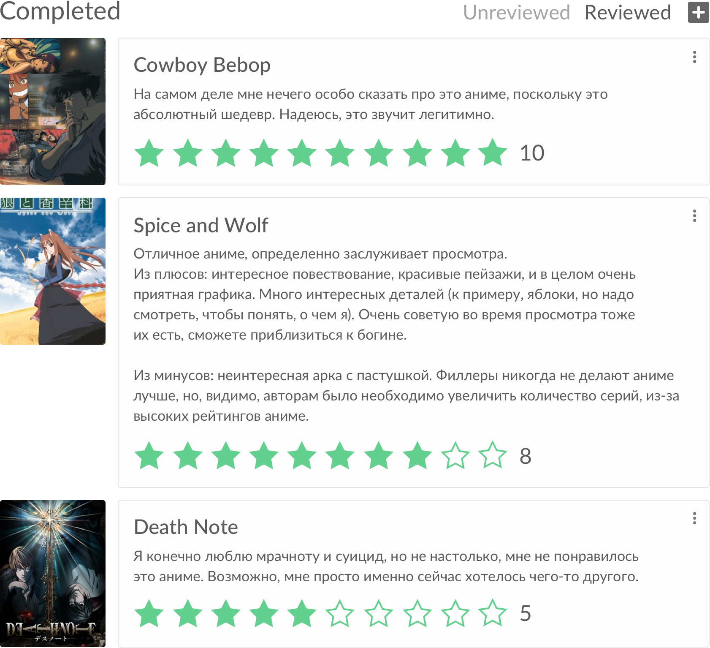
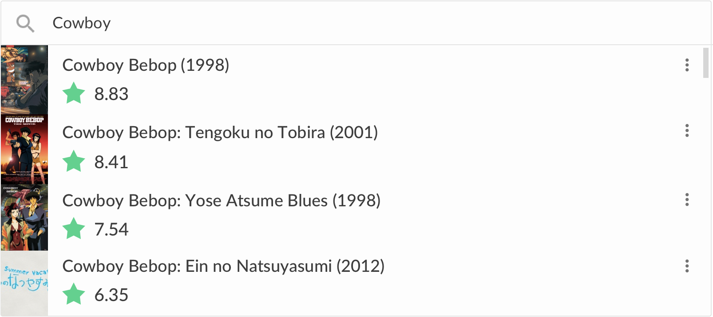

Gintama
The Amanto, aliens from outer space, have invaded Earth and taken over feudal Japan. As a result, a prohibition on swords has been established, and the samurai of Japan are treated with disregard as a consequence.

Your name
Mitsuha Miyamizu, a high school girl, yearns to live the life of a boy in the bustling city of Tokyo—a dream that stands in stark contrast to her present life in the countryside. Meanwhile in the city, Taki Tachibana lives a busy life as a high school student while juggling his part-time job and hopes for a future in architecture.

Koe no Katachi
As a wild youth, elementary school student Shouya Ishida sought to beat boredom in the cruelest ways. When the deaf Shouko Nishimiya transfers into his class, Shouya and the rest of his class thoughtlessly bully her for fun. However, when her mother notifies the school, he is singled out and blamed for everything done to her. With Shouko transferring out of the school, Shouya is left at the mercy of his classmates. He is heartlessly ostracized all throughout elementary and middle school, while teachers turn a blind eye.

JoJo no Kimyou na Bouken: Ougon no Kaze
Naples, 2001. Giorno Giovanna is a small-time crook with one big dream—to become a "Gang-Star." No ordinary thief, Giorno has a connection to the remarkable Joestar bloodline, and possesses a Stand named Gold Experience. His dream starts to become reality when he meets Bruno Buccellati, a mobster from the gang Passione and a fellow Stand user himself. Realizing that they share similar ideals, and both disagree with the gang's harmful affairs, Giorno reveals his goal to Bruno: with Bruno's help, he will reform Passione by overthrowing the boss.

One Punch Man
The seemingly ordinary and unimpressive Saitama has a rather unique hobby: being a hero. In order to pursue his childhood dream, he trained relentlessly for three years—and lost all of his hair in the process. Now, Saitama is incredibly powerful, so much so that no enemy is able to defeat him in battle. In fact, all it takes to defeat evildoers with just one punch has led to an unexpected problem—he is no longer able to enjoy the thrill of battling and has become quite bored.

Irozuku Sekai no Ashita kara
Set in the city of Nagasaki, the story takes place in a world where a minuscule amount of magic remains in everyday life. Hitomi Tsukishiro is a 17-year-old descendant of a witch family who grew up with stale emotions, as she lost her sense of color at a very young age. Feeling sorry for her granddaughter's future, Kohaku, a great witch, sends Hitomi to the past, the year 2018. Through exchanges with her 17-year-old grandmother and her club members, the story follows Hitomi's growth as a person.

Haikyuu!! Second Season
Following their participation at the Inter-High, the Karasuno High School volleyball team attempts to refocus their efforts, aiming to conquer the Spring tournament instead.

Shigatsu wa Kimi no Uso
Music accompanies the path of the human metronome, the prodigious pianist Kousei Arima. But after the passing of his mother, Saki Arima, Kousei falls into a downward spiral, rendering him unable to hear the sound of his own piano.

Mahou Shoujo Madoka Magica
Madoka Kaname and Sayaka Miki are regular middle school girls with regular lives, but all that changes when they encounter Kyuubey, a cat-like magical familiar, and Homura Akemi, the new transfer student.

Mahou Shoujo Madoka Magica Movie 2
Though Sayaka Miki's wish was fulfilled, the unforeseen consequences that came with it overwhelm her, causing her soul gem to become tainted as she succumbs to despair and eventually loses her humanity. Homura Akemi reveals to Kyouko Sakura and Madoka Kaname the ultimate fate of magical girls: once their soul gem becomes tainted, it transforms into a Grief Seed, and they are reborn as witches—a truth Homura learned only through repeating history countless times in a bid to prevent Madoka's tragedy.

Mahou Shoujo Madoka Magica Movie 3
The young girls of Mitakihara happily live their lives, occasionally fighting off evil, but otherwise going about their peaceful, everyday routines. However, Homura Akemi feels that something is wrong with this unusually pleasant atmosphere—though the others remain oblivious, she can't help but suspect that there is more to what is going on than meets the eye: someone who should not exist is currently present to join in on their activities.

3-gatsu no Lion 2nd Season
Now in his second year of high school, Rei Kiriyama continues pushing through his struggles in the professional shogi world as well as his personal life. Surrounded by vibrant personalities at the shogi hall, the school club, and in the local community, his solitary shell slowly begins to crack.

Owarimonogatari 2nd Season
Following an encounter with oddity specialist Izuko Gaen, third-year high school student Koyomi Araragi wakes up in a strange, deserted void only to be greeted by a joyfully familiar face in an alarmingly unfamiliar place.

Kuroshitsuji
Young Ciel Phantomhive is known as "the Queen's Guard Dog," taking care of the many unsettling events that occur in Victorian England for Her Majesty. Aided by Sebastian Michaelis, his loyal butler with seemingly inhuman abilities, Ciel uses whatever means necessary to get the job done. But is there more to this black-clad butler than meets the eye?

Gake no Ue no Ponyo
A lonely little boy named Sousuke lives with his mother by the sea, flashing messages across the water to his father's boat. One day, amid the detritus brought in with the tide, he stumbles upon a little goldfish. Delighted by this strange new friend, he takes her home and names her Ponyo. Sousuke comes to learn, however, that Ponyo is no ordinary fish. A visit from a strange man brings with it fantastical happenings that lead Sousuke and Ponyo on an enlightening adventure.
/(.□. \)
You're trying to pierce the heavens with your drill.
You're trying to pierce the heavens with your drill.
Выше — упрощенная демонстрация работы сайта.
В 2016 году я придумала сайт, когда в очередной раз не знала, что посмотреть. Заодно решила изучить веб-фреймворк для бэкэнда и научиться верстать, и написать реализацию этого сайта.Выбираешь жанр, год, рейтинг, жмешь на кнопку, и, вуаля, не нужно думать, спрашивать чьи-то рекомендации — просто смотришь.
На сайте всего четыре раздела: главная страница с подбором аниме, списки с сохраненками и рецензиями, и поиск по всем аниме в базе.
Сохранение аниме в список
На сайте можно сохранять аниме в два списка — «Хочу посмотреть», и «просмотренное». Есть два способа это сделать — воспользоваться рандомайзером на главной странице, и нажать там кнопку "мне нравится", или воспользоваться поиском по полной базе аниме."Можно писать рецензии на понравившиеся аниме (или наоборот), и ставить им оценки, а потом скидывать ссылку на свой профиль друзьям.


По ссылке anirandom.me доступен прототип, поэтому я не могу гарантировать стабильность его работы.